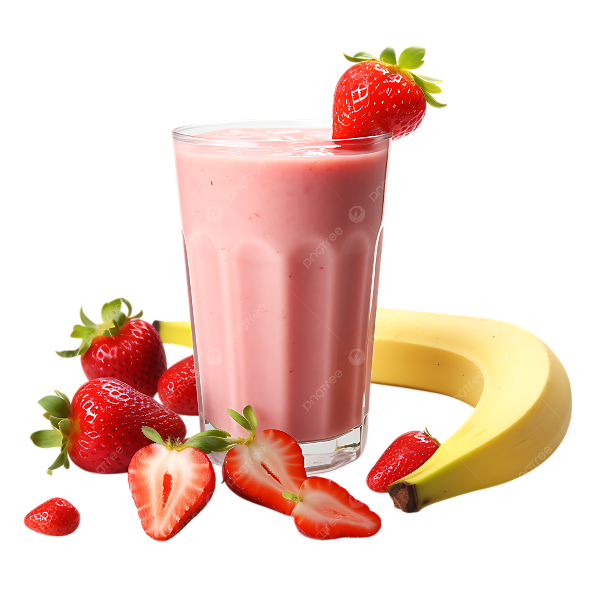

Introduction
A simple yet delicious strawberry banana smoothie recipe that everyone loves. All it takes is 4 ingredients, a blender, and a few minutes to whip it up! This recipe was inspired by Lisa Bryan's recipe here.
Ingredients
- 2 cups of fresh strawberries
- 1 frozen banana
- ½ cup of milk
- ½ cup of Greek yogurt
Instructions
- Peel, slice, and then freeze a banana at -18°C for 1 hour
- Put all your ingredients in the blender
- Blend until smooth
